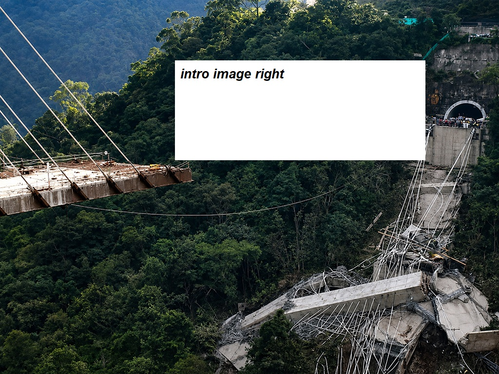
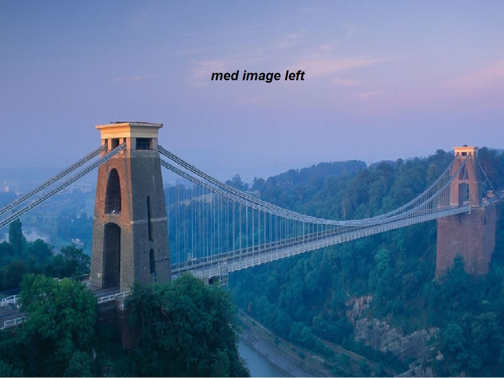
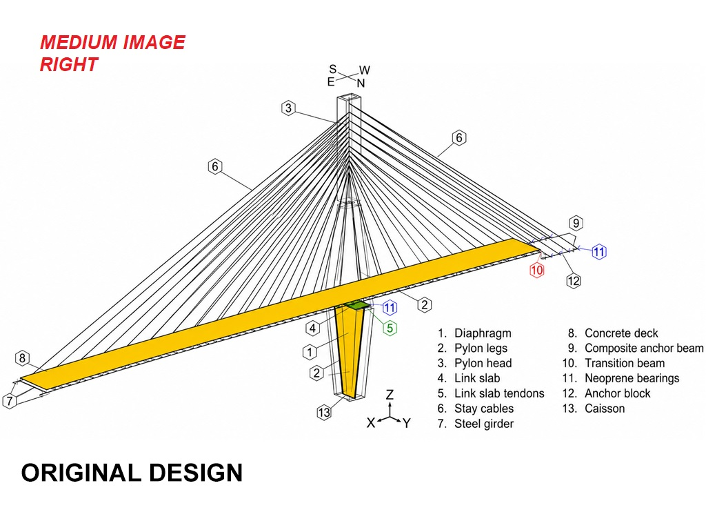
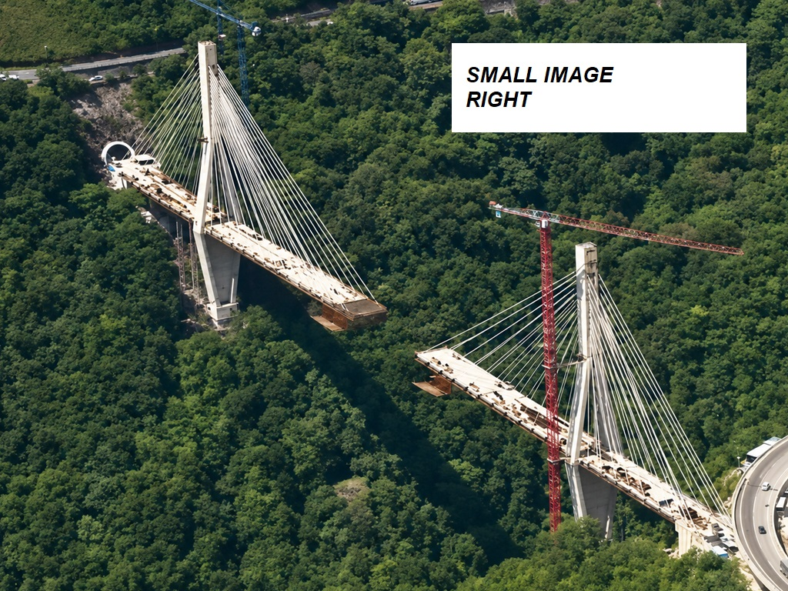
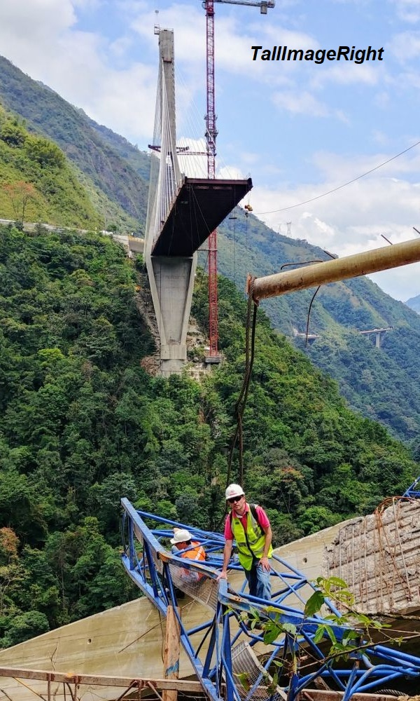

THE CHIRAJARA BRIDGE COLLAPSE
The Chirajara Bridge was part of the Bogotá–Villavicencio highway project in Colombia, designed to improve connectivity between the capital and the eastern plains.
It was conceived as a major engineering landmark: a long-span, cable-stayed structure crossing a deep ravine in a seismically active region.
The bridge was built to shorten journey times, improve transport links and support traffic between Bogotá and the Llanos region.

THE CHIRAJARA BRIDGE COLLAPSE
Bhe Chirajara Bridge was part of the Bogotá–Villavicencio highway project in Colombia, designed to improve connectivity between the capital and the eastern plains.
It was conceived as a major engineering landmark: a long-span, cable-stayed structure crossing a deep ravine in a seismically active region.
The bridge was built to shorten journey times, improve transport links and support traffic between Bogotá and the Llanos region.
IMAGE LEFT TEXT RIGHT
Construction began as part of the Fourth Generation road infrastructure programme, which aimed to modernise Colombia’s transport network.
The Chirajara Bridge consisted of two independent carriageways, each supported by its own set of cable stays anchored to tall concrete pylons.
Its form followed a common modern design strategy for deep valleys, where cable-stayed systems provide an economical way of achieving long spans with minimal foundations in difficult terrain.

IMAGE RIGHT TEXT LEFT START
Construction began as part of the Fourth Generation road infrastructure programme, which aimed to modernise Colombia’s transport network.
The Chirajara Bridge consisted of two independent carriageways, each supported by its own set of cable stays anchored to tall concrete pylons.
Its form followed a common modern design strategy for deep valleys, where cable-stayed systems provide an economical way of achieving long spans with minimal foundations in difficult terrain.

“The failure highlighted the importance of examining the complete structural load path."
Project background
Subsequent investigations revealed that the failure stemmed from a design error involving the lower section of the tower, specifically the transverse (horizontal) ties connecting the legs of the pylon.
Subsequent investigations revealed that the failure stemmed from a design error involving the lower section of the tower, specifically the transverse (horizontal) ties connecting the legs of the pylon.
The design did not provide adequate capacity to resist the combination of axial, bending and shear forces induced during construction.
Cracking had already been observed in the week leading up to the collapse, but its significance was not fully recognised.
Small image right
However, the project became internationally known after the dramatic collapse of one of its pylons on 15 January 2018, during construction. At the time of failure, the deck had not yet been fully connected, and only a portion of the structure was complete.
The collapse resulted in the tragic loss of nine workers and drew significant attention to construction practices, design verification processes and structural safety in large infrastructure projects.
The collapse resulted in the tragic loss of nine workers and drew significant attention to construction practices, design verification processes and structural safety in large infrastructure projects.

TWO COLUMN LEFT
When one of the transverse diaphragms failed, the load was rapidly redistributed to adjacent members, which were also under-designed. This triggered a progressive collapse mechanism, ultimately causing the entire pylon to buckle and fall.
Independent engineering assessments concluded that the failure was not due to material defects, construction errors, or seismic activity, but rather to insufficient structural detailing and inadequate redundancy in the tower design.
As a result of the findings, the partially standing opposite tower was demolished as a precaution. PHOTO As a result of the findings, the partially standing opposite tower was demolished as a precaution. PHOTO As a result of the findings, the partially standing opposite tower was demolished as a precaution. PHOTO
TWO COLUMN RIGHT
The collapse highlighted the importance of robust peer review, especially for complex, non-standard structures in challenging environments.
As a result of the findings, the partially standing opposite tower was demolished as a precaution. PHOTO As a result of the findings, the partially standing opposite tower was demolished as a precaution. PHOTO As a result of the findings, the partially standing opposite tower was demolished as a precaution. PHOTO
As a result of the findings, the partially standing opposite tower was demolished as a precaution. PHOTO As a result of the findings, the partially standing opposite tower was demolished as a precaution. PHOTO As a result of the findings, the partially standing opposite tower was demolished as a precaution. PHOTO
TALL IMAGE RIGHT
A redesign was commissioned, led by a different engineering team, opting for a new viaduct structure rather than trying to replicate the original cable-stayed concept.
The redesigned bridge incorporated greater redundancy, improved detailing, and a more conservative approach to force distribution and seismic resilience.
The Chirajara Bridge collapse has since become a frequently cited case study in structural engineering.
It illustrates several critical lessons: the need for rigorous independent checking, the sensitivity of cable-stayed bridges during staged construction, and the risks associated with complex structures that lack redundancy.
It also demonstrates the importance of recognising and acting upon early warning signs, such as cracking or unusual structural movement.

TALL IMAGE LEFT
A redesign was commissioned, led by a different engineering team, opting for a new viaduct structure rather than trying to replicate the original cable-stayed concept.
The redesigned bridge incorporated greater redundancy, improved detailing, and a more conservative approach to force distribution and seismic resilience.
The Chirajara Bridge collapse has since become a frequently cited case study in structural engineering.
It illustrates several critical lessons: the need for rigorous independent checking, the sensitivity of cable-stayed bridges during staged construction, and the risks associated with complex structures that lack redundancy.
It also demonstrates the importance of recognising and acting upon early warning signs, such as cracking or unusual structural movement.
A cable-stayed bridge transfers deck loads through inclined cables into towers or pylons. A cable-stayed bridge transfers deck loads through inclined cables into towers or pylons. A cable-stayed bridge transfers deck loads through inclined cables into towers or pylons.
The load path describes the route through which forces travel from the bridge deck, through the cables and pylons, and into the ground.
The load path describes the route through which forces travel from the bridge deck, through the cables and pylons, and into the ground.

“The failure highlighted the importance of examining the complete structural load path."